소음진동기사(구) (2012-09-15 기출문제)
1과목: 소음진동개론
1. 그림과 같은 응답 곡선에서 감쇠비는 얼마인가?
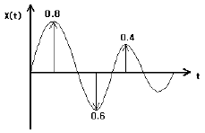
- 0.008
- 0.017
- 0.087
- 0.110
(정답률: 알수없음)

2. 점음원으로부터 30m 떨어진 거리에서의 음압레벨이 89dB일 때, 1m 떨어진 곳에서의 음압레벨은?
- 129.5 dB
- 118.5 dB
- 1⑤.7 dB
- 103.0 dB
(정답률: 알수없음)
3. 1.3옥타브밴드 분석기(정비형 필터)의 중심주파수가 4000Hz 인 경우 다음 중 차단(하한~상한)주파수 범위(Hz)로 가장 적합한 것은?
- 31⑤~4919
- 3246~4760
- 3563~4490
- 3855~4166
(정답률: 알수없음)
4. 다음 중 상온에서의 음속이 일반적으로 가장 빠른 것은?
- 물
- 공기
- 유리
- 금
(정답률: 알수없음)
5. 진동이 인체에 미치는 영향에 관한 설명으로 옳지 않은 것은?
- 3~6Hz 부근에서 인체의 심한 공진이 나타난다.
- 인체 공진 현상은 서 있을 때가 앉아 있을 때보다 심하게 나타난다.
- Raynaud씨 현상은 국소진동의 대표적인 증상이다.
- 착암기, 연마기 등을 많이 사용하는 사람은 주로 국소진동의 피해를 받는다.
(정답률: 알수없음)
6. 백색잡음(white noise)에 관한 설명으로 옳지 않은 것은?
- 보통 저음역과 주음역대의 음이 상대적으로 고음역보다 음량이 높아 인간의 청각면에서는 핑크잡음이 백색잡음보다 모든 주파수대에 동일음량으로 들린다.
- 인간이 들을 수 있는 모든 소리를 혼합하면 주파수, 진폭, 위상이 균일하게 끊임없이 변하는 완전 랜덤 파형을 형성하며 이를 백색잡음이라 한다.
- 단위 주파수 대역(1Hz)에 포함되는 성분의 세기가 전 주파수에 걸쳐 일정한 잡음을 말한다.
- 모든 주파수 대에 동일한 음량을 가지고 있는 것임에도 불구하고, 저음역 쪽으로 갈수록 에너지 밀도가 높아 저음역 쪽의 음성분이 더 많은 것으로 들린다.
(정답률: 알수없음)
7. 귀의 구성요소와 특징에 관한 설명으로 옳지 않은 것은?
- 외이도는 일종의 공명기로서 음을 증폭시킨다.
- 이소골은 공기 중의 음압의 변동에 따른 기압을 조정하는 역할을 한다.
- 난원창은 이소골의 진동을 와우각 중의 림프액에 전달하는 진동판 역할을 한다.
- 와우각의 안쪽은 림프액으로 충진되어 있다.
(정답률: 알수없음)
8. 음파가 방음벽에 수직입사할 때 반사율 αr이 0.9937이다. 이 때 벽체의 투과손실은? (단, 경계면에서 음이 흡수되지 않는다.)
- 12 dB
- 19 dB
- 22 dB
- 29 dB
(정답률: 알수없음)
9. 항공기 소음을 소음계의 D특성으로 측정한 값이 104dB(D)였다. 이 때 감각소음레벨(perceived Noise Level)은 대략 몇 PN dB 인가?
- 102
- 109
- 111
- 115
(정답률: 알수없음)
10. 음압 실효치가 5.36× 10-1N/m2인 평면파의 음세기는? (단, 고유 음향임피던스는 400 rayls 이다.)
- 4.75×10-4W/m2
- 5.39×10-4W/m2
- 6.25×10-4W/m2
- 7.18×10-4W/m2
(정답률: 알수없음)
11. 공장내부에 소음을 발생시키는 기계가 존재하는데, PWL 86dB인 기계 12대, PWL 91dB인 기계 10대가 동시 가동될 때 PWL의 합은?
- 약 88 dB
- 약 94 dB
- 약 98 dB
- 약 102 dB
(정답률: 알수없음)
12. 음향이론과 관련하여 다음 설명에 해당하는 효과는?
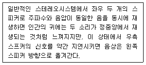
- 마스킹 효과
- 칵테일파티 효과
- 선행음 효과
- 도플러 효과
(정답률: 알수없음)
13. 근음장(near fild)에 관한 설명으로 옳지 않은 것은?
- 관심대상음의 수파장 내에 나타난다.
- 입자속도가 음의 전파방향과 개연성이 있고, 잔향실이 대표적이다.
- 음의 세기는 음압의 2승과 비례관계가 거의 없다.
- 음압레벨이 음원의 크기, 주파수와 방사면의 위상 등에 크게 영향을 받는다.
(정답률: 알수없음)
14. 음의 굴절에 관한 설명으로 옳지 않은 것은?
- 스넬의 법칙과 관련이 있다.
- 음파는 대기 온도가 높은 쪽으로 굴절한다.
- 매질 간에 음속 차이가 클수록 굴절도 커진다.
- 높이에 따른 풍속 차이가 클수록 굴절도 커진다.
(정답률: 알수없음)
15. 다음 중 구조 감쇠에 관한 설명으로 가장 적합한 것은?
- 구조물이 조화 외력에 의해 변형할 때 외력에 의한 일이 열 또는 음향에너지로 소산하는 현상
- 윤활이 되지 않는 두면 사이의 상대 운동에 의해 에너지가 소산하는 현상
- 구조물이 운동할 때 유체의 점성에 의해 에너지가 소산하는 현상
- 구조물의 임피던스 부정합에 의해 빛에너지가 소산하여 가진되는 현상
(정답률: 알수없음)
16. 다음 중 평면파의 파동 방정식으로 옳은 것은? (단, u : 매질입자변위, t : 시간, x : 음파의 진행 방향, C : 파동의 전파속도)
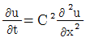
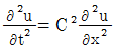
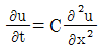
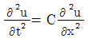
(정답률: 알수없음)
17. A공장 장방형 벽체 규격의 가로× 세로가 각각 8m× 4m이다. 벽면 밖에서의 SPL이 83dB 이었다면 15m 떨어진 지점에서의 SPL은 몇 dB 인가?
- 56 dB
- 59 dB
- 62 dB
- 65 dB
(정답률: 알수없음)
18. 무한히 긴 선음원이 있다. 이 음원으로부터 50m 거리 만큼 떨어진 위치에서의 음압레벨이 93dB 이라면 5m 떨어진 곳에서의 음압레벨은 몇 dB인가?
- 130 dB
- 120 dB
- 110 dB
- 103 dB
(정답률: 알수없음)
19. 길이가 약 55cm인 양단이 뚫린 관이 공명하는 기본음의 주파수(Hz)는? (단, 15℃ 기준)
- 309
- 416
- 619
- 832
(정답률: 알수없음)
20. 스프링에 0.5kg의 질량을 가진 물체를 매달았을 때 스프링이 0.2m 만큼 늘어났다. 이 때 스프링 상수는?
- 24.5N/m
- 22.5N/m
- 14.5N/m
- 2.5N/m
(정답률: 알수없음)
2과목: 소음방지기술
21. 실내벽면에 대한 흡음대책 전후의 흡음력이 각각 500m2, 3155m2일 때 실내소음 저감량(dB)은? (단, 평균흡음률은 0.3 미만이라 가정)
- 약 8dB
- 약 5dB
- 약 3dB
- 약 1dB
(정답률: 알수없음)
22. 벽체 외부로부터 확산음이 입사될 때 이 확산음의 음압레벨은 125dB이었다. 실내의 흡음력은 30m2이고, 벽의 투과손실은 30dB, 벽의 면적이 20m2이면 실내의 음압레벨은?
- 110dB
- 99dB
- 86dB
- 81dB
(정답률: 알수없음)
23. 음향투과등급(STC)에 관한 설명으로 옳지 않은 것은?
- Grade I부터 Grade V 까지 5가지 등급으로 나누 어지며 Grade V 가 가장 차음성능이 뛰어나다.
- 측정 대상 시료에 대해 잔향실에서 1/3옥타브 대역으로 측정한다.
- 평가 기준곡선 상의 모든 주파수 대역별 투과 손실과 기준곡선 값과의 차의 산술평균이 2dB 이내여야 한다.
- 평가 시에 단 하나의 투과손실 값도 기준곡선 밑으로 8dB를 초과해서는 안된다.
(정답률: 알수없음)
24. 대형 작업장의 덕트가 민가를 향해 있어 취출구소음이 문제되고 있다. 이에 대한 대책으로 옳지 않은 것은?
- 취출구 끝단에 소음기를 창착한다.
- 취출구 끝단에 철망 등을 설치하여 음의 진행을 세분 혼합하도록 한다.
- 취출구의 면적을 작게 한다.
- 취출구 소음의 지향성를 바꾼다.
(정답률: 알수없음)
25. 다음 그림과 같이 음파를 확대하여 음향에너지 밀도를 희박하게 하고 공동단을 줄여서 감음하는 것으로 단면적비에 따라 감쇠량을 결정하는 소음기 형식은?
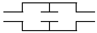
- 공명형
- 팽창형
- 흡음형
- 간섭형
(정답률: 알수없음)
26. 구멍직경 8.5mm, 구멍간 상하좌우간격 22mm, 두께 15mm인 다공판을 50mm의 공기층을 두고 설치할 경우 공명주파수는 약 얼마인가? (단, 구멍의 크기가 음의 파장에 비해 매우 적고, 음속은 340m/s 이다.)
- 561 Hz
- 724 Hz
- 916 Hz
- 1010 Hz
(정답률: 알수없음)
27. 다음 중 흡음에 관한 설명으로 옳지 않은 것은?
- asbestos, rock wool 등은 중ㆍ고음역에서 흡음성이 좋다.
- 판진동 흡음은 대개 1000~2000Hz부근에서 최대흡음률 0.7~0.8를 지니며, 판이 두껍거나 배후 공기 층이 클수록 고음역으로 이동한다.
- 유공보드의 경우 배후에 공기층을 두어 시공하면 공기층이 상당히 두꺼운 경우를 제외하고 일반적으로는 어느 주파수영역을 중심으로 한 산형(山形)의 흡음특성을 보인다.
- 다공질형 흡음재는 음에너지를 운동에너지로 바꾸어 열에너지로 전환한다.
(정답률: 알수없음)
28. 평균흡음율 0.04인 실내의 평균음압레벨을 85dB에서 80dB로 낮추기 위해서는 평균흡음율을 약 얼마로 해야 하는가?
- 0.⑤
- 0.13
- 0.25
- 0.31
(정답률: 알수없음)
29. 동일한 재료(면밀도 200kg/m2)로 구성된 공기층의 두께가 16cm인 중공이중벽이 있다. 500Hz에서 단일 벽체의 투과손실이 46dB일 때, 이 중공이중벽의 저음역에서의 공명주파수는 약 몇 Hz에서 발생되겠는가? (단, 음의 전파속도는 343m/s, 공기의 밀도는 1.2kg/m3이다.)
- 9Hz
- 15Hz
- 19Hz
- 26Hz
(정답률: 알수없음)
30. 단일벽에서 음파가 벽면에 수직입사하고 있다. 벽체의 면밀도는 80kg/m2, 입사되는 주파수는 500Hz 일 경우 벽면의 투과손실은? (단, ωm≫ 2ρc인 경우)
- 39dB
- 49dB
- 54dB
- 69dB
(정답률: 알수없음)
31. 중공 이중벽의 설계에 있어서 저음역의 공명주파수(f0)를 64Hz로 설정하고자 한다. 두 벽의 면밀도가 각각 15kg/m2, 10kg/m2일 때 실용식으로 산출할 경우, 중간 공기층 두께는 약 얼마 정도로 해야 하는가?
- 5.8cm
- 10.7cm
- 14.6cm
- 19.7cm
(정답률: 알수없음)
32. 연결관과 팽창실의 단면적이 각각 A1, A2인 팽창형 소음기의 투과손실 TL은? (단, m=A2/A1, k=(2πf)/c, L: 팽창부의 길이, f : 대상주파수, c : 음속)
- TL=10log([1+0.25(m-(1/m2))sin2kL]dB
- TL=10log([1+4(m-(1/m))sin2kL]dB
- TL=10log([1+0.25(m-(1/m))2sin2kL]dB
- TL=10log([1+4(m-(1/m))sinkL]dB
(정답률: 알수없음)
33. 휀(fan)의 날개수가 5개이고 3600rpm으로 회전하고 있다. 이 휀이 작동할 때 기본음의 주파수 성분은 몇 Hz인가?
- 5Hz
- 60Hz
- 300Hz
- 3600Hz
(정답률: 알수없음)
34. 블록벽, 유리창, 출입문, 문틈으로 구성된 벽체가 있고, 벽체의 구성부의 면적과 투과율은 아래 표와 같을 때, 차음대책을 우선적으로 고려해야 할 부위는?
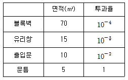
- 블록벽
- 유리창
- 출입문
- 문틈
(정답률: 알수없음)
35. 기류음 감소대책으로 거리가 먼 것은?
- 소음의 방사면을 축소시킨다.
- 분출유속을 저감시킨다.
- 관의 곡류부분을 완화시킨다.
- 밸브 다단화를 수행한다.
(정답률: 알수없음)
36. 가로×세로×높이가 각각 20m×15m×5m인 방의 바닥 및 천장의 흡음율은 0.15이고, 벽의 흡음율은 0.3이다. 이 방의 바닥 중앙에 음향파워레벨이 90dB인 무지향성 점음원이 있을 때 실반경은?
- 1.56m
- 1.96m
- 2.19m
- 3.12m
(정답률: 알수없음)
37. 덕트의 내부에 흡음재를 부착하여 덕트 소음을 줄이고자 한다. 덕트의 내경이 0.2m인 경우 다음 중 최대감음주파수의 범위로 가장 적합한 것은?
- 215Hz＜f＜430Hz
- 430Hz＜f＜860Hz
- 860Hz＜f＜1720Hz
- 1720Hz＜f＜3440Hz
(정답률: 알수없음)
38. 방음벽 설계시 고려사항으로 가장 거리가 먼 것은?
- 점음원의 경우 방음벽의 길이가 높이의 5배 이상이면 길이의 영향은 고려하지 않아도 된다.
- 음원측 벽면은 될 수 있는 한 흡음처리하여 반사음을 방지하는 것이 좋다.
- 방음벽의 모든 도장은 전광택으로 반사율이 30%이하여야 하고, 방음벽의 높이가 일정할 때 음원과 수음점의 중간위치에 세우는 경우가 가장 효과적 이다.
- 방음벽에 의한 현실적 최대 회절감쇠치는 점음원의 경우 24dB, 선음원의 경우 22dB 정도로 본다.
(정답률: 알수없음)
39. 차음재료 선정 및 사용상 유의점으로 옳지 않은 것은?
- 차음에 가장 영향이 큰 것은 틈이므로 틈이나 파손된 곳이 없도록 하여야 한다.
- 서로 다른 재료로 구성된 벽의 차음효과를 높이기 위해서는 벽체 각 구성부의 면적과 당해 벽체의 Siτi의 값이 다른 자재로의 시공을 검토하는 것이 좋다.
- 차음벽에서 면의 진동은 위험하므로 가진력이 큰 기계가 설치된 공장의 차음벽은 방진지지 및 방진 합금의 이용이나 damping 처리 등을 검토한다.
- 콘크리트 블록을 차음벽으로 사용하는 경우에는 표면을 모르타르로 바르는 것이 좋다.
(정답률: 알수없음)
40. 소음방지대책을 소음원대책, 전달경로대책, 수음자 대책으로 분류할 때 다음 중 주로 전달경로대책에 해당되는 것은?
- 충격이 발생하는 지점에 유연한 재료를 부착하여 장비로부터 발생하는 충격력을 저감시킨다.
- 기존 건물 내 소음원의 위치를 변경하여 소음원과 수음자 사이의 거리를 늘려준다.
- 작업공간에 방음 부스 등을 설치한다.
- 작업자에게 귀마개 등 청력 보호장비의 착용을 의무화한다.
(정답률: 알수없음)
3과목: 소음진동 공정시험 기준
41. 규제기준 중 발파소음평가시에는 대상소음도에 시간대별 보정발파횟수(N)에 따른 보정량을 보정하여 평가소음도를 구하는데, 다음 중 그 보정량으로 옳은 것은? (단, N ＞ 1)
- +10logN1/10
- +10logN
- +20logN1/10
- +20logN
(정답률: 알수없음)
42. 배출허용기준 중 진동측정방법에서 진동레벨계만으로 측정할 경우 진동레벨계의 지시치의 변화폭이 5dB이내일 때 측정진동레벨로 정하는 기준으로 옳은 것은?
- 구간내 최대치부터 진동레벨의 크기순으로 5개를 산술평균한 진동레벨
- 구간내 최대치부터 진동레벨의 크기순으로 10개를 산술평균한 진동레벨
- 구간내 최대치값
- 구간내 최대치부터 진동레벨의 크기순으로 5개를 기하평균한 진동레벨
(정답률: 알수없음)
43. 다음 중 소음계의 구성순서로 옳은 것은?
- 마이크로폰 - 증폭기 - 레벨레인지 변환기 - 청감보정회로 - 지시계기
- 마이크로폰 - 청감보정회로 - 레벨레인지 변환기 - 증폭기 - 지시계기
- 마이크포폰 - 레벨레인지 변환기 - 증폭기 - 청감보정회로 - 지시계기
- 마이크로폰 - 증폭기 - 청감보정회로 - 레벨레인지 변환기 - 지시계기
(정답률: 알수없음)
44. 다음은 L10진동레벨 계산방법이다. ( ) 안에 알맞은 것은?
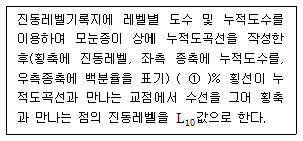
- 90
- 70
- 50
- 15
(정답률: 알수없음)
45. 소음계의 사용기준에 관한 설명으로 가장 적합한 것은?
- 측정가능 주파수 범위는 8Hz ~ 31.5Hz 이상이어야 한다.
- 소음을 규제하기 위한 목적으로 사용되는 측정기기로서 KS C IEC 61672-1에 정한 클래스 2의 소음계 또는 이와 동등 이상의 성능을 가진 것을 사용한다.
- 자동차 소음측정에 사용되는 측정가능 소음도 범위는 50dB ~ 120dB 이상이어야 한다.
- 레벨레인지 변환기의 전환오차는 1dB 이내이어야 한다.
(정답률: 알수없음)
46. 진동측정과 관련된 장치 중 다음 설명에 해당하는 장치는?
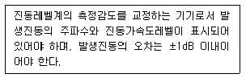
- calibrator
- output
- data recorder
- weighting networks
(정답률: 알수없음)
47. 발파진동 측정시 디지털 진동자동분석계를 사용할 경우 배경진동레벨을 정하는 기준으로 옳은 것은?
- 샘플주기를 0.1초 이하로 놓고 5분이상 측정하여 자동 연산∙기록한 80%범위의 상단치인 L10값을 그 지점의 배경진동레벨로 한다.
- 샘플주기를 0.1초 이하로 놓고 발파진동의 발생기간 동안 측정하여 자동 연산∙기록한 최고치를 그 지점의 배경진동레벨로 한다.
- 샘플주기를 1초 이내에서 결정하고 5분이상 측정하여 자동 연산ㆍ기록한 80%범위의 상단치인 L10값을 그 지점의 배경진동레벨로 한다.
- 샘플주기를 1초 이내에서 결정하고 발파진동의 발생 기간동안 측정하여 자동 연산∙기록한 최고치를 그 지점의 배경진동레벨로 한다.
(정답률: 알수없음)
48. 어느 소음레벨을 측정한 결과 85(76, 95)[dB(A)]로 표시될 때 다음 중 가장 적합하게 설명된 것은?
- 평균치가 85[dB(A)], 80[%] Range의 하단이 76[dB(A)], 상단이 95[dB(A)]라는 뜻이다.
- 중앙치가 85[dB(A)], 최저치가 76[dB(A)], 최고치가 95[dB(A)]라는 뜻이다.
- 중앙치가 85[dB(A)], 90[%] Range의 하단이 76[dB(A)], 상단이 95[dB(A)]라는 뜻이다.
- 평균치가 85[dB(A)], 최저치가 76[dB(A)], 최고치가 95[dB(A)]라는 뜻이다.
(정답률: 알수없음)
49. 규제기준 중 발파진동 측정방법에 관한 설명으로 옳지 않은 것은?
- 진동레벨기록기를 사용하여 측정할 때에는 기록지상의 지시치의 최고치를 측정진동레벨로 한다.
- 진동레벨계만으로 측정할 경우에는 최고 진동레벨이 고정(hold)되어서는 안된다.
- 작업일지 및 발파계획서 또는 폭약사용신고서를 참조하여 소음진동관리법규에서 구분하는 각 시간대중에서 최대발파진동이 예상되는 시각의 진동을 포함한 모든 발파진동을 1지점 이상에서 측정한다.
- 진동레벨계의 출력단자와 진동레벨기록기의 입력단자를 연결한 후 전원과 기기의 동작을 점검하고 교정은 매회 실시하여야 한다.
(정답률: 알수없음)
50. 다음은 철도소음한도 측정방법 중 측정시간 및 측정지점수 기준에 관한 설명이다. ( ) 안에 알맞은 것은?
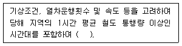
- 낮 시간대는 1시간 간격을 두고 3회 측정하여 산술 평균하며, 밤 시간대는 2회 1시간 동안 측정하여 산술평균한다.
- 낮 시간대는 2시간 간격을 두고 1시간씩 2회 측정하여 산술평균하며, 밤 시간대는 1회 1시간 동안 측정한다.
- 낮 시간대는 4시간 간격을 두고 1시간씩 2회 측정하여 산술평균하며, 밤 시간대는 2회 1시간 동안 측정하여 산술평균한다.
- 낮 시간대는 4시간 간격을 두고 1시간씩 2회 측정하여 산술평균하며, 밤 시간대는 1회 1시간 측정 한다.
(정답률: 알수없음)
51. 환경기준 중 소음측정방법에서“도로변지역”에 관한 설명으로 옳은 것은?
- 도로단으로부터 차선수×10m로 한다.
- 도로단으로부터 차선수×15m로 한다.
- 고속도로 또는 자동차 전용도로의 경우에는 도로단으로부터 200m 이내의 지역을 말한다.
- 고속도로 또는 자동차 전용도로의 경우에는 도로단으로부터 250m 이내의 지역을 말한다.
(정답률: 알수없음)
52. 항공기 소음한도 측정방법 중 측정조건 등에 관한 내용으로 옳지 않은 것은?
- 최고소음도는 매 항공기 통과시마다 배경소음보다 높은 상황에서 측정하여야 하며, 그 지시치중의 최고치를 말한하다.
- 소음계의 마이크로폰은 소음원 방향으로 향하도록 하여야 한다.
- 손으로 소음계를 잡고 측정할 경우 소음계는 측정자의 몸으로부터 0.3m이상 떨어져야 하며, 측정자는 비행경로에 수평으로 위치하여야 한다.
- 풍속이 5m/s를 초과할 때는 측정하여서는 안된다.(상시측정용 옥외마이크로폰은 그러하지 아니하다.)
(정답률: 알수없음)
53. 규제기준 중 생활진동 측정방법으로 가장 거리가 먼 것은?
- 피해가 예상되는 적절한 측정시간에 2지점 이상의 측정지점수를 선정ㆍ측정하여 그중 높은 진동레벨을 측정진동레벨로 한다.
- 진동픽업의 연결선은 잡음 등을 방지하기 위하여 지표면에 일직선으로 설치한다.
- 진동레벨계의 감각보정회로는 별도 규정이 없는 한 V특성(수직)에 고정하여 측정하여야 한다.
- 진동픽업의 설치장소는 완충물이 넉넉하게 있는 곳으로 충분히 다져서 단단히 굳은 장소로 한다.
(정답률: 알수없음)
54. 7일간 측정한 WECPNL이 각각 62, 66, 64, 64, 65, 63, 64일 때 7일간 평균 WECPNL값은?
- 62
- 64
- 66
- 68
(정답률: 알수없음)
55. 진동레벨계에 관한 설명으로 거리가 먼 것은?
- 진동픽업은 지면에 설치할 수 있는 구조로서 환경 진동을 측정할 수 있어야 한다.
- 진동픽업에 의해 변환된 전기신호를 증폭시키는 증폭기가 포함되어 있다.
- 감각보정회로는 V특성(수직특성)을 갖춘 것이어야 한다.
- 레벨레인지 변환기의 지시는 폰(phon)의 스케일을 갖춘 것이어야 한다.
(정답률: 알수없음)
56. 소음측정기기의 구조별 성능기준 중 지시계기에 관한 설명으로 옳지 않은 것은?
- 지침형에서는 유효지시범위는 1dB 이상이어야 한다.
- 지침형에서는 각각의 눈금은 1dB 이하를 판독할 수 있어야 한다.
- 지침형에서는 1dB 눈금간격이 1mm 이상으로 표시되어야 한다.
- 디지털형에서는 숫자가 소수점 한자리까지 표시되어야 한다.
(정답률: 알수없음)
57. 항공기 소음한도 측정에서 항공기소음 측정점 선정시 원추형 상부공간이 의미하는 것은?
- 측정위치를 지나는 지면 또는 바닥면의 법선에 반각 80°의 선분이 지나는 공간을 말한다.
- 측정위치를 지나는 지면 또는 바닥면의 법선에 반각 60°의 선분이 지나는 공간을 말한다.
- 측정위치를 지나는 지면 또는 바닥면의 법선에 반각 45°의 선분이 지나는 공간을 말한다.
- 측정위치를 지나는 지면 또는 바닥면의 법선에 반각 30°의 선분이 지나는 공간을 말한다.
(정답률: 알수없음)
58. 규제기준 중 동일건물 내 사업장소음 측정방법에 관한 설명으로 옳지 않은 것은?
- 측정점은 피해가 예상되는 실에서 소음도가 높을 것으로 예상되는 지점의 바닥 위 3~5m 높이로 한다.
- 측정점에 높이가 1.5m를 초과하는 장애물이 있는 경우에 장애물로부터 1.0m 이상 떨어진 지점으로한다.
- 소음도 기록기가 없을 경우에는 소음계만으로 측정할 수 있으며, 소음계와 소음도 기록기를 연결하여 측정ㆍ기록하는 것을 원칙으로 한다.
- 소음계의 동특성은 원칙적으로 빠름(fast)모드를 하여 측정하여야 한다.
(정답률: 알수없음)
59. 어떤 위치에서 기계의 소음을 측정한 결과 기계 가동 후의 소음도가 89dB(A), 기계 가동 전의 소음도가 85dB(A)로 계측되었다. 이 때 배경소음 영향을 보정한 대상소음도는?
- 84.4 dB(A)
- 85.4 dB(A)
- 86.8 dB(A)
- 88.7 dB(A)
(정답률: 알수없음)
60. 도로교통소음한도의 측정방법에 관한 설명으로 옳지 않은 것은?
- 소음도의 계산과정에서는 소숫점 첫째자리를 유효 숫자로 하고, 측정소음도(최종값)는 소숫점 첫째 자리에서 반올림한다.
- 소음계의 청감보정회로는 A특성에 고정하여 측정하여야 한다.
- 디지털 소음자동분석계를 사용할 경우에는 샘플주기를 1초 이내에서 결정하고 5분 이상 측정하여 자동 연산∙기록한 등가소음도를 그 지점의 측정소음도로 한다.
- 소음도 기록기 또는 소음계만을 사용하여 측정할 경우에는 계기조정을 위하여 먼저 선정된 측정위치에서 대략적인 소음의 변화양상을 파악한 후 소음계 지시치의 변화를 목측으로 5초 간격 30회 판독∙기록한다.
(정답률: 알수없음)
4과목: 진동방지기술
61. 운동 방정식
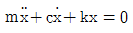
으로 표시되는 감쇠 자유진동에서 임계 감쇠(critical damping)가 되는 조건은?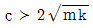
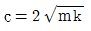
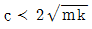
- c=0
(정답률: 알수없음)
62. 600rpm으로 회전하고 있는 차축의 정적 불평형력은직경 2.0m인 원주상으로 질량 1kg이 회전하고 있는 경우와 같다고 할 때, 이 때 발생하는 가진력의 최대치는 약 몇 N인가?
- 230
- 400
- 660
- 790
(정답률: 알수없음)
63. 최대가속도 720cm/s2인 물체가 360rpm으로 운동하고 있을 때, 이 물체진동의 변위진폭은? (단, 물체는 조화운동을 하고 있다.)
- 0.35cm
- 0.51cm
- 0.88cm
- 2.77cm
(정답률: 알수없음)
64. 무게 1710N, 회전속도 1170rpm의 공기압축기가 있다. 방진고무의 지점을 6개로 하고, 진동수비가 2.9라 할 때 고무의 정적수축량은? (단, 감쇠는 무시)
- 0.44cm
- 0.55cm
- 0.63cm
- 0.82cm
(정답률: 알수없음)
65. 그림과 같이 질량이 m인 물체가 양단고정보의 중앙에달려 있을 때 이 계의 등가스프링 상수는?
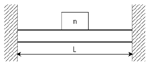
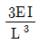
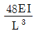
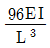
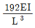
(정답률: 알수없음)
66. 방진재료로 사용되는 금속 스프링의 장점으로 거리가 먼 것은?
- 고주파 차진에 매우 효과적이다.
- 일반적으로 부착이 용이하고, 내구성이 좋다.
- 자동차의 현가스프링에 이용되는 중판스프링과 같이 스프링장치에 구조부분의 일부의 역할을 겸할 수 있다.
- 최대변위가 허용된다.
(정답률: 알수없음)
67. 중량(W)의 물체가 속도(v)로 충돌하는 기계가 있을 때 이로 인해 진동이 발생한다. 스프링 정수를 원래의 1/4로 하면 충격력은 어떻게 변화되는가?
- 처음과 동일
- 원래의 1/2
- 원래의 1/4
- 원래의 1/16
(정답률: 알수없음)
68.
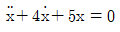
으로 진동하는 진동계에서 대수감쇠율은?- 7.46
- 12.57
- 15.47
- 18.71
(정답률: 알수없음)
69. 질량 400kg인 물체가 4개의 지지점 위에서 평탄진동할 때 정적수축 1cm의 스프링으로 이 계를 탄성지지하여 90%의 절연율을 얻고자 한다면 최저 강제진동수는? (단, 감쇠비는 0)
- 10.5Hz
- 12.5Hz
- 16.5Hz
- 19.5Hz
(정답률: 알수없음)
70. 감쇠자유진동을 하는 진동계에서 감쇠 고유진동수가 10Hz, 비감쇠계의 고유진동수가 12Hz이면 감쇠비는?
- 0.33
- 0.55
- 0.66
- 0.77
(정답률: 알수없음)
71. x1=4sin10t와 x2=4sin10.2t인 두 개의 조화운동이 합성될 때 울림 진동수(beat frequency:cps)는?
- 0.0318
- 0.0621
- 0.0636
- 0.0954
(정답률: 알수없음)
72. 진동원에서 발생하는 가진력은 특성에 따라 기계회전부의 질량 불평형, 기계의 왕복운동 및 충격에 의한 가진력 등으로 대별되는데 다음 중 발생 가진력이 주로 충격에 의해 발생하는 것은?
- 단조기
- 전동기
- 송풍기
- 펌프
(정답률: 알수없음)
73. 어떤 단순 조화진동의 변위진폭은 0.1mm, 최대가속도는 20m/s2이다. 이 운동의 진동수f(frequency)는?
- 71.2Hz
- 447Hz
- 3.18×104Hz
- 2×105Hz
(정답률: 알수없음)
74. 그림과 같은 진동계에서 고유진동수는?
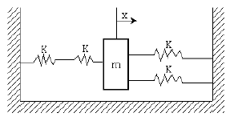
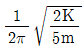
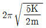
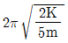
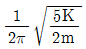
(정답률: 알수없음)
75. 4개의 스프링에 의해 지지된 진동체가 있다. 이 계의 강제 진동수 및 고유 진동수가 각각 15Hz 및 1.5Hz라 할 때 스프링에 의한 % 절연율은? (단, 이 계는 비감쇠 1자유도계이다.)
- 98.99%
- 88.99%
- 78.99%
- 68.99%
(정답률: 알수없음)
76. 진동원에 따라 방진설계가 달라지는데 왕복동압축기, 윤활유펌프배관, 화학플랜트배관 등에 유체가 흐르고 있을 때, 발생되는 진동으로 가장 적합한 것은?
- 캐비테이션 관련 진동
- 기주진동과 서어징 관련 진동
- 맥동, 수격현상 관련 진동
- 스로싱(액면요동) 관련 진동
(정답률: 알수없음)
77. 회전기계에서 발생하는 진동을 강제진동과 자려진동으로 구분할 때 다음 중 자려진동에 해당하는 것은?
- 회전기계의 불평형에 의한 진동
- 구름베어링에 기인하는 진동
- 서징
- 기어의 치형오차에 기인하는 진동
(정답률: 알수없음)
78. 다음 중 방진시의 고려사항으로 옳지 않은 것은?
- 강제진동수가 고유진동수에 비해 아주 작을 때, 스프링 정수를 크게 한다.
- 강제진동수가 고유진동수와 거의 같을 때, 감쇠가 작은 방진재를 사용하거나 dash pot등은 제거한다.
- 강제진동수가 고유진동수에 비해 아주 클 때, 기계의 질량을 크게 한다.
- 가진력의 주파수가 고유진동우의 0.8~1.4배 정도 일 때 공진이 커지므로 이 영역은 가능한 피한다.
(정답률: 알수없음)
79. 공기스프링의 장단점으로 가장 거리가 먼 것은?
- 압축기 등 부대시설이 필요하다.
- 내부 감쇠저항이 크므로 추가적인 감쇠장치가 불필요하다.
- 설계시에 비교적 자유스럽게 스프링 높이, 스프링 정수, 내하력 등을 선택할 수 있다.
- 하중의 변화에 따라 고유진동수를 일정하게 유지시킬 수 있다.
(정답률: 알수없음)
80. 방진대책은 발생원, 전파경로, 수진측 대책으로 분류된다.“수진점 근방에 방진구를 판다”는 일반적으로 위 대책 중 주로 어디에 해당하는가?
- 발생원 대책
- 전파경로 대책
- 수진측 대책
- 해당안됨
(정답률: 알수없음)
5과목: 소음진동 관계 법규
81. 소음진동관리법규상 생활소음 규제기준 중 발파소음의 경우 보정기준으로 옳은 것은?
- 주간에만 규제기준치(광산의 경우 사업장 규제기준)에 +2dB을 보정한다.
- 주간에만 규제기준치(광산의 경우 사업장 규제기준)에 +3dB을 보정한다.
- 주간에만 규제기준치(광산의 경우 사업장 규제기준)에 +5dB을 보정한다.
- 주간에만 규제기준치(광산의 경우 사업장 규제기준)에 +10dB을 보정한다.
(정답률: 알수없음)
82. 소음진동관리법규상 소음배출시설기준으로 옳지 않은 것은? (단, 마력기준시설 및 기계ㆍ기구에 한한다.)
- 10마력 이상의 압축기(나사식 압축기는 50마력 이상으로 한다)
- 10마력 이상의 분쇄기(파쇄기와 마쇄기를 포함한다)
- 20마력 이상의 혼합기(콘크리트프랜트 및 아스팔트프랜트의 혼합기는 10마력 이상으로 한다)
- 30마력 이상의 초지기
(정답률: 알수없음)
83. 소음진동관리법규상 자연환경보전지역 중 수산자원 보호구역내에 있는 공장의 밤시간대 공장진동 배출 허용기준은?
- 40dB(V) 이하
- 50dB(V) 이하
- 60dB(V) 이하
- 70dB(V) 이하
(정답률: 알수없음)
84. 소음진동관리법상 환경기술인의 업무를 방해하거나환경기술인의 요청을 정당한 사유 없이 거부한 자에 대한 과태료 부과기준으로 옳은 것은?
- 1천만원 이하의 과태료
- 500만원 이하의 과태료
- 300만원 이하의 과태료
- 200만원 이하의 과태료
(정답률: 알수없음)
85. 환경정책기본법상“환경보전”의 용어 정의에 해당하는 행위로 가장 거리가 먼 것은?
- 환경오염으로부터 환경을 보호하는 행위
- 환경을 양호한 상태로 이용하는 모든 행위
- 오염된 환경을 개선하는 행위
- 쾌적한 환경의 상태를 유지ㆍ조성하기 위한 행위
(정답률: 알수없음)
86. 다음은 소음진동관리법규상 측정망설치계획의 고시 사항이다. ( ) 안에 가장 적합한 것은?
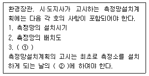
- ① 측정소를 설치할 토지나 건축물의 위치 및 면적, ② 6개월 이전
- ① 측정소를 설치할 토지나 건축물의 위치 및 면적, ② 3개월 이전
- ① 측정오염물질항목, ② 6개월 이전
- ① 측정오염물질항목, ② 3개월 이전
(정답률: 알수없음)
87. 소음진동관리법규상 소음배출시설 규모가 규정에 해당되는 배출시설을 설치하지 아니한 사업장으로 각 항목의 동력 규모 미만인 것들의 동력 합계가 50마력 이상인 경우는 소음배출시설 기준에 해당된다. 이와 관련하여 각 마력별 산정기준(방법)으로 옳지 않은 것은? (단, 국토의 계획 및 이용에 관한 법률에 따른 주거지역, 상업지역 및 녹지지역의 사업장으로 한정한다)
- 10마력인 시설은 1을 곱하여 산정한다.
- 20마력인 시설은 0.9을 곱하여 산정한다.
- 30마력인 시설은 0.8을 곱하여 산정한다.
- 40마력인 시설은 0.7을 곱하여 산정한다.
(정답률: 알수없음)
88. 소음진동관리법상 이 법에서 사용하는 용어의 뜻으로 옳지 않은 것은?
- “소음(騷音)”이란 기계ㆍ기구ㆍ시설, 그 밖의 물체의 사용 또는 환경부령으로 정하는 사람의 활동으로 인하여 발생하는 강한 소리를 말한다.
- “진동(振動)”이란 기계ㆍ기구ㆍ시설, 그 밖의 물체의 사용으로 인하여 발생하는 강한 흔들림을 말한다.
- “소음발생건설기계”란 건설공사에 사용하는 기계 중 소음이 발생하는 기계로서 국토해양부령으로 정하는 것을 말한다.
- “교통기관”이란 기차ㆍ자동차ㆍ전차ㆍ도로 및 철도 등을 말한다. 다만, 항공기와 선박은 제외한다.
(정답률: 알수없음)
89. 소음진동관리법규상 운행차 소음허용기준을 초과하여 운행한 자동차 소유자에게 운행차 개선명령을 할 경우 개선에 필요한 기간으로 옳은 것은?
- 개선명령일부터 7일
- 개선명령일부터 10일
- 개선명령일부터 14일
- 개선명령일부터 30일
(정답률: 알수없음)
90. 다음은 소음진동관리법규상 자동차의 종류기준이다. ( ) 안에 알맞은 것은? (단, 2006년 1월 1일부터 제작되는 자동차 기준)
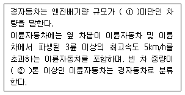
- ① 800cc, ② 0.5
- ① 800cc, ② 1
- ① 1000cc, ② 0.5
- ① 1000cc, ② 1
(정답률: 알수없음)
91. 소음진동관리법규상 생활소음 규제기준 중 공사장에서 주간의 경우 특정공사 사전신고 대상 기계∙장비를 사용하는 작업시간이 1일 5시간일 때 규제기준치에 대한 보정값은?
- +2dB
- +3dB
- +5dB
- +10dB
(정답률: 알수없음)
92. 소음진동관리법규상 운행차 정기검사의 방법∙기준 및 대상 항목에서 소음도 측정 중 배기소음 측정 검사 방법으로 옳은 것은?
- 자동차의 변속장치를 중립 위치로 하고 정지가동 상태에서 원동기의 최고 출력 시의 100% 회전속도로 10초 동안 운전하여 최대소음도를 측정한다.
- 자동차의 변속장치를 중립 위치로 하고 정지가동 상태에서 원동기의 최고 출력 시의 80% 회전속도로 10초 동안 운전하여 최대소음도를 측정한다.
- 자동차의 변속장치를 중립 위치로 하고 정지가동 상태에서 원동기의 최고 출력 시의 80% 회전속도로 5초 동안 운전하여 최대소음도를 측정한다.
- 자동차의 변속장치를 중립 위치로 하고 정지가동 상태에서 원동기의 최고 출력 시의 75% 회전속도로 4초 동안 운전하여 최대소음도를 측정한다.
(정답률: 알수없음)
93. 환경정책기본법에서 사용하는 용어의 뜻으로 옳지 않은 것은?
- “환경”이라 함은 자연환경과 사업장 환경을 말한다.
- “자연환경”이라 함은 지하∙지표(해양을 포함한다) 및 지상의 모든 생물과 이들을 둘러싸고 있는 비생물적인 것을 포함한 자연의 상태(생태계 및 자연 경관을 포함한다)를 말한다.
- “환경훼손”이라 함은 야생동∙식물의 남획 및 그 서식지의 파괴, 생태계질서의 교란, 자연경관의 훼손, 표토(表土)의 유실 등으로 인하여 자연환경의 본래적 기능에 중대한 손상을 주는 상태를 말한다.
- “환경용량”이란 일정한 지역에서 환경오염 또는 환경훼손에 대하여 환경이 스스로 수용, 정화 및복원하여 환경의 질을 유지할 수 있는 한계를 말한다.
(정답률: 알수없음)
94. 소음진동관리법규상 특정공사 사전신고를 한 자가 변경신고를 하기 위한 사항 중“환경부령으로 정하는 중요한 사항”에 해당하지 않는 것은?
- 특정공사 사전신고 대상 기계장비의 10퍼센트 이상의 증가
- 특정공사 기간의 연장
- 공사 규모의 10퍼센트 이상 확대
- 소음∙진동 저감대책의 변경
(정답률: 알수없음)
95. 소음진동관리법규상 확인검사대행자와 관련한 행정처분 기준 중 고의 또는 중대한 과실로 확인검사 대행업무를 부실하게 한 경우 2차 행정처분기준으로 옳은 것은?
- 경고
- 업무정지 1월
- 업무정지 3월
- 등록취소
(정답률: 알수없음)
96. 다음은 소음진동관리법상 폭약의 사용으로 인한 소음∙진동의 방지에 관한 사항이다. ( ) 안에 가장 적합한 것은?
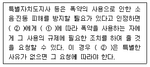
- ① 총포∙도검∙화약류 등 단속법, ② 폭약협회장
- ① 총포∙도검∙화약류 등 단속법, ② 지방경찰청장
- ① 폭약류관리법, ② 폭약협회장
- ① 폭약류관리법, ② 지방경찰청장
(정답률: 알수없음)
97. 소음진동관리법규상 환경기술인을 두어야 할 사업장 및 그 자격기준에 관한 사항으로서 옳지 않은 것은?
- 총 동력합계 5,000마력 미만인 경우 사업자가 해당 사업장의 배출시설 및 방지설 업무에 종사하는 피고용인 중에서 임명하는 자로 한다.
- 총 동력합계 5,000마력 이상인 경우 소음진동산업기사(소음∙지동기사2급) 이상의 기술자격소지자 1인 이상으로 한다.
- 총 동력합계 5,000마력 이상인 경우 해당 사업장의 관리 책임자는 사업자가 임명한 자로 한다.
- 총 동력합계는 대수기준시설 및 기계∙기구를 포함한 소음배출시설 중 기계ㆍ기구 마력의 총합계를 말한다.
(정답률: 알수없음)
98. 소음진동관리법규상 중형 화물자동차의 규모기준으로 옳은 것은? (단, 2006년 1월 1일부터 제작되는 자동차 기준)
- 엔진배기량 3,000cc 이상 및 차량 총중량 5톤 초과 10톤 이하
- 엔진배기량 2,500cc 이상 및 차량 총중량 5톤 초과 7.5톤 이하
- 엔진배기량 2,000cc 이상 및 차량 총중량 3톤 초과 5톤 이하
- 엔진배기량 1,000cc 이상 및 차량 총중량 2톤 초과 3.5톤 이하
(정답률: 알수없음)
99. 소음진동관리법규상 주거지역내에 있는 생활소음 규제기준(dB(A))은? (단, 소음원은 공장, 야간시간대 기준)
- 45 이하
- 50 이하
- 55 이하
- 60 이하
(정답률: 알수없음)
100. 소음진동관리법규상 소음발생건설기계의 종류 중 ① 발전기, ② 브레이커 기준으로 옳은 것은?
- ① 발 전 기 : 정격출력 400kW 미만의 실외용으로 한정한다, ② 브레이커 : 휴대용으로 포함하며, 중량 5톤 이하로 한정한다.
- ① 발 전 기 : 정격출력 400kW 미만의 실외용으로 한정한다, ② 브레이커 : 휴대용으로 포함하며, 중량 10톤 이하로 한정한다.
- ① 발 전 기 : 정격출력 19kW 이상 500kW 미만의 것으로 한정한다, ② 브레이커 : 휴대용으로 포함하며, 중량 5톤 이하로 한정한다.
- ① 발 전 기 : 정격출력 19kW 이상 500kW 미만의 것으로 한정한다, ② 브레이커 : 휴대용으로 포함하며, 중량 10톤 이하로 한정한다.
(정답률: 알수없음)